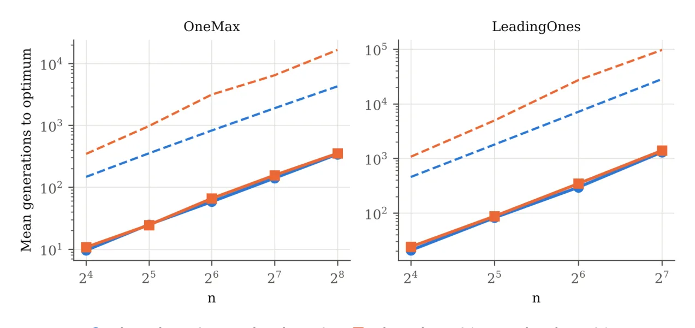
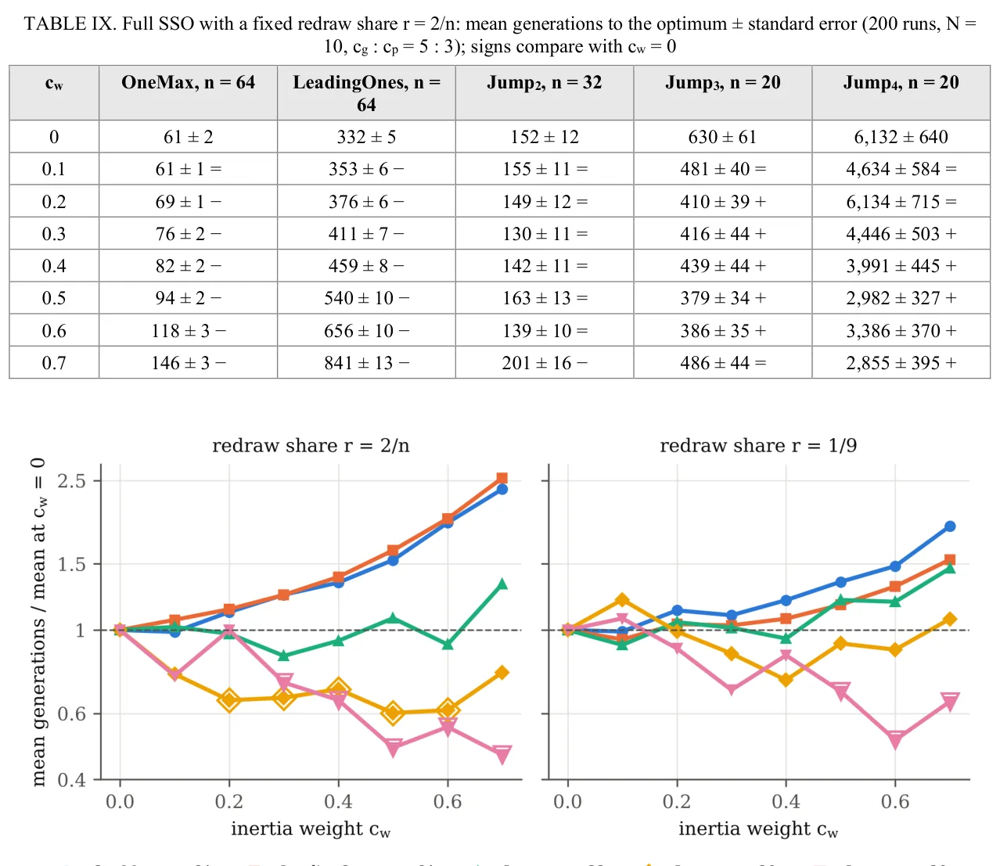
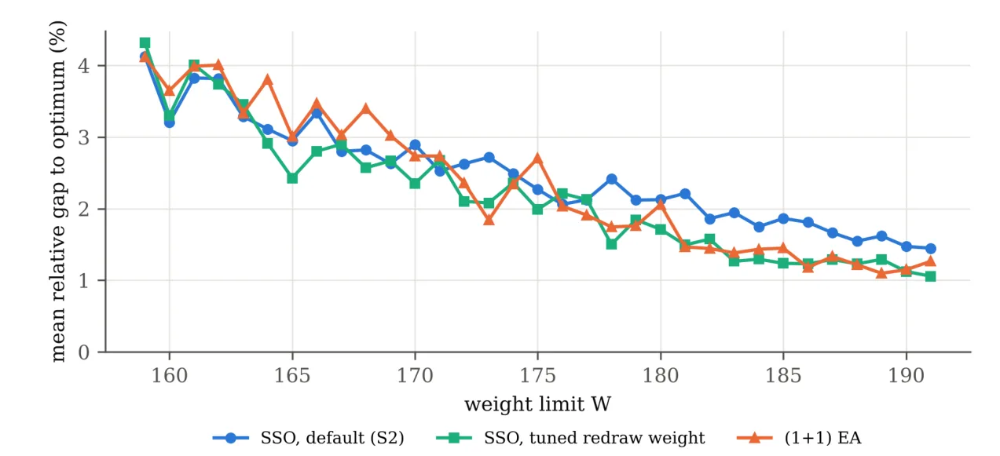

O Problema da Teoria Atrasada
A Optimização por Enxame Simplificada (SSO, do inglês Simplified Swarm Optimisation) foi proposta por Wei-Chang Yeh como um método discreto que remove a complexidade das versões tradicionais. Enquanto o Particle Swarm Optimization (PSO) clássico depende de vetores de velocidade e fatores de aprendizado, o SSO opera apenas com comparações de números aleatórios contra limiares cumulativos. Essa simplicidade facilitou sua aplicação em problemas práticos, como alocação de redundância, sequenciamento de desmontagem e ajuste de hiperparâmetros em redes neurais convolucionais. No entanto, enquanto a prática avançava, a teoria matemática que garante seu comportamento permaneceu estagnada.
A Regra de Atualização e a Cadeia de Markov
O cerne da análise deste paper reside na decomposição da regra de atualização. Em cada passo, cada variável de solução é atualizada independentemente. O algoritmo sorteia um número uniforme e decide entre quatro ações: copiar o melhor global (probabilidade c_g), copiar o melhor pessoal (probabilidade c_p), manter o valor atual (inércia, probabilidade c_w) ou redesenhar uniformemente (probabilidade c_r). Note que c_g + c_p + c_w + c_r = 1. Esta estrutura é fundamentalmente diferente de outros algoritmos evolutivos ou de enxame, pois não há velocidade nem produtos de fatores de aprendizado.
Estrutura Exata sob Memória Congelada
Para tornar o problema tratável analiticamente, os autores consideram primeiro o cenário de memória congelada, onde os melhores global e pessoal não mudam durante a execução. Nesse caso, a dinâmica de cada coordenada pode ser modelada como uma Cadeia de Markov Finita. O kernel de transição para uma coordenada específica assume uma forma explícita: c_w I + (1 - c_w)Π, onde I é a matriz identidade e Π é a matriz de probabilidade de transição baseada nas cópias. Esta estrutura permite derivar a lei estacionária exata e, crucialmente, a taxa de decaimento da cadeia.
Convergência e Taxa Exata
O resultado mais imediato da análise sob memória congelada é que a taxa de convergência exata é c_w^t. Isso significa que a inércia (c_w) dita a velocidade com que a informação do melhor ponto se propaga ou se perde se não houver redesenho. Se c_w for próximo de 1, a cadeia converge lentamente. Se c_r for zero e o ponto atual não for o ótimo, a cadeia pode ficar presa. Os autores provam que, para garantir a convergência global em algoritmos elitistas, é necessário que toda configuração tenha probabilidade positiva de ser alcançada, o que requer c_r > 0.
Limites de Tempo de Atingimento
Quando a memória não está congelada e o algoritmo é elitista (mantém o melhor encontrado até agora), a análise se torna mais complexa. Os autores estabelecem um limite geométrico para o tempo de atingimento (hitting-time). Eles demonstram que, partindo de uma posição não ótima e mantendo c_r fixo, o número esperado de avaliações para alcançar um único ótimo é pelo menos exp(n c_r / 2). Este é um limite inferior forte que destaca a dependência exponencial com o tamanho do problema n se c_r não for escalado adequadamente.
Análise de Runtime em Funções Unimodais
Para funções unimodais clássicas como OneMax (contar o número de bits 1) e LeadingOnes (contar bits 1 consecutivos do início), os autores utilizam acoplamento explícito para derivar limites de tempo esperado. Eles mostram que, com uma taxa de redesenho escalada como m/((m-1)n), o número esperado de gerações é O(n log n) para OneMax e O(n^2) para LeadingOnes, para qualquer tamanho de população. Isso coloca o SSO em competição teórica com algoritmos evolutivos padrão, mas com uma estrutura de atualização mais simples.

O Papel da Inércia: Esperança vs. Realidade
Um dos achados mais contraintuitivos deste trabalho é o efeito da inércia (c_w). Teoricamente, sob posições estacionárias e memória congelada, a inércia não pode acelerar a entrada em qualquer conjunto em comparação com a amostragem independente. Os experimentos confirmam isso: na maioria dos casos testados em OneMax e LeadingOnes, a inércia desacelera a busca. A Figura 5 ilustra claramente que, para a maioria dos pesos de inércia, o tempo médio de geração aumenta em relação ao caso sem inércia (c_w = 0).
Limitações da Inércia em Posições Não Estacionárias
Os autores advertem que a comparação direta entre inércia e amostragem independente só vale rigorosamente para posições estacionárias. Em posições transitórias (durante a busca), a inércia pode ter efeitos diferentes. No entanto, nos benchmarks testados, não houve ganho consistente. Em funções com lacunas de fitness, como Jump_k, valores moderados de inércia parecem ajudar, sugerindo um mecanismo mediado por memória que não é totalmente capturado pela análise de memória congelada. Isso indica que a inércia pode preservar informações úteis temporariamente, mas não acelera a convergência global.
Mecanismo Interno: Recombinação de Memórias
O algoritmo SSO possui um mecanismo de recombinação implícito. Quando os valores de referência (global, pessoal e atual) discordam, as ramificações de cópia podem recombinar as memórias. O redesenho uniforme (c_r) é forçado apenas onde nenhum ramo ativo detém o valor alvo. A Figura 6 mostra que a maior parte das atualizações de coordenadas ocorre nas classes onde há discordância, forçando o algoritmo a explorar novas combinações. Isso explica a eficiência do SSO em problemas como Jump_2, onde precisa escapar de ótimos locais complementares.
Comparação com Algoritmos Evolutivos
Os autores comparam o SSO com o (1+1) Evolutionary Algorithm (EA) e algoritmos genéticos. Em funções Jump, o SSO precisou de 3,8 a 8,9 vezes menos avaliações que o (1+1) EA com taxa de mutação 1/n. No entanto, não houve vantagem consistente sobre mutação ajustada ou um algoritmo genético (μ+1) com crossover uniforme. Isso sugere que a recombinação emergente do SSO não substitui necessariamente o crossover explícito, mas oferece uma alternativa viável e mais simples de implementar.

Diretrizes de Projeto Baseadas em Teoria
Com base na análise, os autores propõem diretrizes práticas. A taxa de redesenho c_r deve ser mantida > 0 e, para garantir tempo polinomial para um único ótimo, deve ser O((log n)/n). Valores fixos altos de c_r (como 0,2 ou 0,5) resultam em tempos de execução muito maiores. Para o end-game (fase final), quando a distância ao ótimo é 1, a taxa ideal é m/((m-1)n). Além disso, manter c_g e c_p > 0 é crucial para permitir a recombinação de memórias complementares.
Validação em Problemas de Engenharia
A utilidade prática da análise foi testada em problemas de alocação de redundância. Uma versão ajustada da regra de redesenho do SSO melhorou seis dos oito pares de benchmark testados. A Figura 7 mostra que, em problemas de alocação de redundância com limites de peso, o SSO ajustado superou tanto a versão padrão quanto o (1+1) EA em termos de proximidade do ótimo exato. Isso valida que a teoria de Markov não é apenas acadêmica, mas pode guiar o tuning de parâmetros para ganhos reais.

Limitações e Trabalho Futuro
O paper reconhece limitações. O limite de tempo de atingimento é um pior-caso e pode ser frouxo em paisagens com informação de fitness. A análise não cobre escalas de tempo que diminuem durante a execução (como em simulated annealing) ou distribuições pesadas. Além disso, a análise de inércia em posições não estacionárias permanece em aberto. O acoplamento para atualizações assíncronas também precisa ser redesenhado. Estes são passos naturais para estender a teoria.
Conclusão
A análise de cadeias de Markov finitas fornece uma compreensão profunda da Simplified Swarm Optimisation. Ela revela que a simplicidade do SSO vem com trade-offs claros: a inércia não é uma bala de prata e pode ser prejudicial, enquanto o redesenho uniforme é crítico para a convergência global. As diretrizes derivadas permitem um tuning mais racional dos parâmetros, levando a melhorias práticas em problemas de engenharia discreta. Este trabalho fecha uma lacuna significativa entre a aplicação heurística e a fundamentação teórica do SSO.
O que fica
- SSO atualiza variáveis copiando melhores ou redesenhando; a taxa de convergência exata é c_w^t sob memória congelada.
- Inércia não acelera a busca em posições estacionárias e pode desacelerar a convergência em OneMax e LeadingOnes.
- O redesenho uniforme é essencial para escapar de ótimos locais; a taxa c_r deve ser O((log n)/n) para tempo polinomial.
- Versões ajustadas da regra de SSO superaram o algoritmo (1+1) EA em problemas de alocação de redundância.
Paper original: A Finite Markov Chain Analysis of the Simplified Swarm Optimisation Update Rule
Comentários
Nenhum comentário ainda. Seja o primeiro.